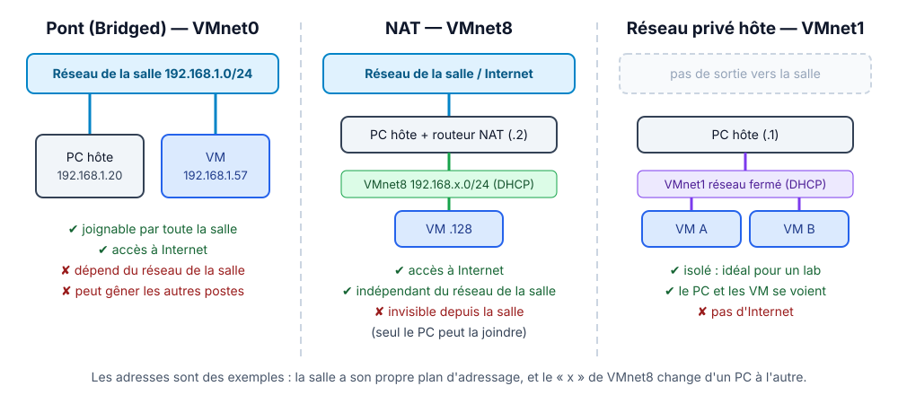
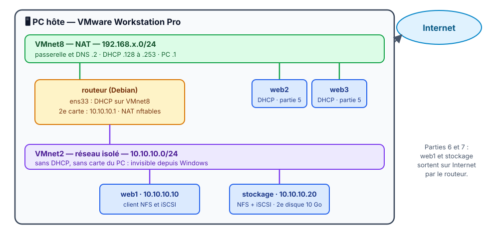

Virtualiser le réseau¶
Résumé
Une VM a besoin d'un réseau, et ce réseau est lui aussi virtuel : cartes réseau virtuelles, commutateurs virtuels, routeurs et pare-feux qui ne sont que des logiciels. Cette partie explique comment l'hyperviseur relie les VM entre elles et au monde extérieur, et compare les trois modes de Workstation : pont, NAT et réseau privé hôte.
Le TP construit un petit réseau d'entreprise isolé : un réseau privé 10.10.10.0/24 invisible depuis Windows, un serveur web dedans, et une VM Debian qui sert de routeur pour le relier à Internet. À la fin, le serveur web1 est caché derrière le routeur, sort sur Internet par lui, et peut même être publié sur un port choisi.
| Propriété | Valeur |
|---|---|
| Difficulté | Intermédiaire |
| Durée estimée | 2 h |
| Version décrite | VMware Workstation Pro 26H1, Debian 13.7, nftables 1.1 |
| Place dans le parcours | Partie 6 sur 17 du parcours Virtualisation — jour 2 |
| Dernière mise à jour | 2026-11-16 |
Convention de lecture
🖥️ PC hôte (Windows et Workstation) · 🐧 VM Debian (le nom de la VM est précisé) · 🌐 navigateur du PC · ✍️ exercice · 🛟 instantané. Les comptes et mots de passe sont rappelés sur la page d'accueil du parcours.
Prérequis : la partie 5 est terminée : le modèle modele-debian (instantané modele-v1) et le serveur web1 existent.
1. Les briques d'un réseau virtuel¶
1.1 Carte réseau et commutateur virtuels¶
Dans un réseau physique, chaque ordinateur a une carte réseau, reliée par un câble à un commutateur (switch), qui fait passer les trames d'une machine à l'autre. Dans un hyperviseur, tout cela existe en logiciel :
| Élément physique | Équivalent virtuel | Dans Workstation |
|---|---|---|
| Carte réseau | Carte réseau virtuelle (vNIC), avec sa propre adresse MAC | Network Adapter dans VM > Settings |
| Câble | Le réglage qui relie la carte à un réseau | Le choix Bridged, NAT, Host-only ou Custom |
| Commutateur | Commutateur virtuel (vSwitch) | Les réseaux VMnet0 à VMnet19 |
| Routeur, box Internet | Routeur NAT intégré à l'hyperviseur, ou VM routeur | Le service NAT de VMnet8, ou une VM comme celle du TP |
| Serveur DHCP | Service DHCP de l'hyperviseur | Le service DHCP de VMnet1 et VMnet8 |
Les VM branchées sur le même commutateur virtuel communiquent entre elles, exactement comme des PC sur le même switch. Pour passer d'un réseau à un autre, il faut un routeur, physique ou virtuel.
Pourquoi virtualiser le réseau ?
- Segmenter : séparer les serveurs, les postes, une zone exposée à Internet (DMZ) ou un lab, sans acheter un switch par réseau. Un attaquant qui compromet une machine d'un segment ne voit pas directement les autres.
- Tester : monter une architecture réseau complète (routeurs, pare-feux, plusieurs sous-réseaux) sur un seul PC, comme le lab pfSense du wiki.
- Automatiser : créer un réseau devient une opération logicielle, scriptable. C'est le principe du réseau défini par logiciel (SDN), vu au jour 4.
1.2 Les trois modes de Workstation¶

Le mode choisi décide qui peut parler à la VM, et si elle peut sortir sur Internet
VMware Workstation propose principalement trois types de réseau :
- Le pont (Bridged), géré par le commutateur virtuel VMnet0, branche les VM directement sur le réseau physique du PC. Elles reçoivent une adresse IP du serveur DHCP du réseau de la salle (le routeur ou la box) et communiquent dans les deux sens avec toutes les machines de ce réseau (un ping fonctionne dans les deux sens si les pare-feux l'autorisent).
- Le NAT (Network Address Translation), géré par VMnet8, place les VM sur leur propre réseau virtuel. Elles reçoivent une adresse du serveur DHCP de VMware et sortent vers le réseau physique et Internet derrière l'adresse IP du PC, qui fait office de passerelle : le NAT masque leurs adresses privées. La communication est donc à sens unique : les VM peuvent joindre la salle et Internet, mais la salle ne peut pas joindre les VM, sauf avec une redirection de port. Seul le PC hôte peut les joindre, car il a une adresse sur VMnet8.
- Le réseau privé hôte (Host-only), géré par VMnet1, relie les VM à un réseau fermé : faute de routeur NAT, il ne communique avec aucun autre réseau. Seuls le PC (d'où le nom host-only) et les VM branchées sur ce commutateur en font partie ; le DHCP de VMware leur attribue une adresse.
En résumé : le pont met les VM sur le réseau de la salle, le NAT leur donne un réseau à part qui sort sur Internet par le PC, le réseau privé hôte leur donne un réseau à part qui ne sort nulle part. Les commutateurs VMnet0, VMnet1 et VMnet8 sont préconfigurés ; on peut en créer d'autres (VMnet2 à VMnet19, soit 20 réseaux au total sous Windows) dans l'éditeur de réseaux virtuels.
1.3 ✍️ Exercice : quel mode choisir ?¶
- Un serveur web dans une VM doit être consulté par tous les PC de la salle.
- Une VM de test doit pouvoir télécharger des mises à jour, mais personne ne doit pouvoir s'y connecter depuis la salle.
- Un lab d'analyse de logiciels malveillants : les VM ne doivent jamais sortir du PC.
- Un lab avec un pare-feu en VM qui protège plusieurs serveurs en VM.
- Au centre de formation, le réseau de la salle n'accepte qu'un seul appareil par prise murale.
Corrigé
- Pont : la VM a une adresse sur le réseau de la salle et tout le monde peut la joindre.
- NAT : la VM sort sur Internet, mais elle est invisible depuis la salle.
- Réseau privé hôte, et même un réseau personnalisé sans carte du PC (comme le VMnet2 du TP) : rien ne sort, ni vers Internet, ni vers Windows.
- Le pare-feu a deux cartes : l'une en NAT (ou en pont) pour l'extérieur, l'autre sur un réseau personnalisé isolé où sont branchés les serveurs. C'est exactement le TP de cette partie.
- NAT : le pont ferait apparaître une adresse MAC supplémentaire par VM sur la prise, que le réseau refuserait. En NAT, seule l'adresse du PC apparaît.
2. TP : créer un réseau isolé¶
On crée un réseau VMnet2 totalement isolé : pas de serveur DHCP, pas de carte réseau du PC branchée dessus. Il jouera le rôle du réseau interne d'une entreprise, 10.10.10.0/24.

Le lab à la fin du jour 2 : le routeur est le seul lien entre le réseau isolé et l'extérieur
- 🖥️ Dans Workstation, ouvrir Edit > Virtual Network Editor. Si les réglages sont grisés, cliquer sur Change Settings en bas de la fenêtre : des droits d'administrateur Windows sont demandés.
- Cliquer sur Add Network…, choisir VMnet2, puis OK.
- VMnet2 sélectionné, dans la partie basse de la fenêtre :
- choisir Host-only (connect VMs internally on a private network) ;
- décocher Connect a host virtual adapter to this network : le PC ne sera pas branché sur ce réseau ;
- décocher Use local DHCP service to distribute IP addresses to VMs : les adresses seront fixées à la main, comme sur un réseau de serveurs ;
- Subnet IP :
10.10.10.0; Subnet mask :255.255.255.0.
- Cliquer sur Apply, puis OK.
Pourquoi pas de DHCP ni de carte du PC ?
Sans carte du PC, Windows ne voit pas ce réseau : rien ne peut y entrer ou en sortir, sauf par une VM qui a une carte de chaque côté (le routeur). Sans DHCP, on fixe les adresses des serveurs à la main : c'est l'usage pour des serveurs, dont l'adresse ne doit jamais changer.
3. TP : construire une VM routeur¶
3.1 Créer la VM et lui ajouter une seconde carte¶
- 🖥️ Créer un clone lié de
modele-debian(instantanémodele-v1) nommérouteur, dansC:\VM\routeur(même méthode qu'en partie 5). Lui laisser 1 vCPU ; régler sa mémoire sur 512 Mo (un routeur Linux sans interface graphique n'a pas besoin de plus). - 🖥️ VM
routeuréteinte, ouvrir VM > Settings, cliquer sur Add…, choisir Network Adapter, puis Finish. - Sélectionner le nouveau Network Adapter 2, choisir Custom: Specific virtual network et, dans la liste, VMnet2. Laisser le premier Network Adapter en NAT. Cliquer sur OK.
- 🖥️ Démarrer
routeuret se connecter entssr. -
🐧 routeur : donner son identité au clone, puis redémarrer et se reconnecter :
3.2 Identifier les deux cartes¶
🐧 routeur : afficher les cartes réseau et leurs adresses :
Noter le nom des deux cartes :
- la première, branchée sur VMnet8, a une adresse en
192.168.x.128ou au-dessus ; elle s'appelle souventens33(parfoisens160ouens192, selon le type de carte choisi par Workstation) ; - la seconde, sur VMnet2, n'a pas d'adresse ; elle s'appelle par exemple
ens36ouens37.
Dans la suite de la page, la carte VMnet8 du routeur est appelée ens33 et la carte VMnet2 ens36 : remplacer les deux noms par ceux affichés, dans toutes les commandes et tous les fichiers.
🐧 routeur : relever aussi l'adresse de la passerelle et du DNS de VMnet8, qui donne le x de son PC :
La première ligne, default via 192.168.x.2 dev ens33, donne l'adresse 192.168.x.2. La noter : elle servira de serveur DNS à toutes les VM du réseau VMnet2 (parties 6, 7 et 8).
Quelle carte est laquelle ?
En cas de doute, comparer les adresses MAC : ip -br link affiche celle de chaque carte, et Workstation celle de chaque Network Adapter (bouton Advanced… dans VM > Settings).
3.3 Donner une adresse fixe à la carte du réseau interne¶
-
🐧 routeur : ouvrir le fichier de configuration du réseau :
-
Ajouter à la fin (avec le vrai nom de la seconde carte) :
/etc/network/interfaces (ajout)# Carte du réseau interne (VMnet2) allow-hotplug ens36 iface ens36 inet static address 10.10.10.1/24Pas de ligne
gateway: la passerelle par défaut du routeur reste celle de VMnet8, reçue par DHCP surens33. Enregistrer et quitter (Ctrl+O, Enter, Ctrl+X). -
🐧 routeur : activer la carte et vérifier :
3.4 Activer le routage¶
Par défaut, Linux ne fait pas passer les paquets d'une carte à l'autre : un poste ordinaire n'est pas un routeur. On active le routage IP (IP forwarding).
🐧 routeur :
echo "net.ipv4.ip_forward=1" | sudo tee /etc/sysctl.d/99-routeur.conf
sudo sysctl --system | grep forward
La réponse net.ipv4.ip_forward = 1 confirme que le routage est actif. Le fichier dans /etc/sysctl.d/ le réactive à chaque démarrage.
Et /etc/sysctl.conf ?
Beaucoup de tutoriels modifient /etc/sysctl.conf. Ce fichier n'existe plus dans Debian 13, et même recréé, il ne serait plus lu au démarrage par le service systemd-sysctl : le réglage serait perdu au premier redémarrage. Les réglages du noyau se placent dans des fichiers .conf du dossier /etc/sysctl.d/, lus au démarrage et par sysctl --system.
3.5 Activer la traduction d'adresses (NAT)¶
Le réseau 10.10.10.0/24 est inconnu en dehors du routeur : une réponse venant d'Internet ne saurait pas revenir vers 10.10.10.10. Le routeur doit donc remplacer l'adresse des machines internes par la sienne quand les paquets sortent : c'est la traduction d'adresses (NAT), ici en mode masquerade. On utilise nftables, le pare-feu standard de Debian.
-
🐧 routeur : vérifier que nftables est installé (il l'est en principe depuis l'installation de Debian ; sinon, la commande l'installe) :
-
🐧 routeur : ouvrir le fichier de configuration de nftables (il contient déjà une table
inet filtervide, sans effet) : -
Ajouter à la fin :
/etc/nftables.conf (ajout)table ip nat { chain postrouting { type nat hook postrouting priority srcnat; policy accept; oifname "ens33" masquerade } }La règle se lit : « pour tout paquet qui sort par
ens33(vers VMnet8 et Internet), remplacer l'adresse source par celle du routeur ».ens33doit être le vrai nom de la carte VMnet8 du routeur, relevé en section 3.2 : avec un nom faux,nft -cne signale aucune erreur, mais la règle ne s'applique jamais et les VM de VMnet2 n'ont pas Internet. -
🐧 routeur : vérifier la syntaxe, activer nftables au démarrage, le démarrer, puis afficher les règles chargées :
La première commande ne répond rien si le fichier est correct.
-
🐧 routeur : éteindre la VM :
sudo poweroff. - 🛟 🖥️ Prendre l'instantané
routeur-ok, puis redémarrerrouteur. Il doit rester allumé pendant toute la suite du jour 2 : c'est le seul accès à Internet du réseau VMnet2.
Un routeur, pas encore un pare-feu
La table inet filter de /etc/nftables.conf est vide : le routeur fait passer tout le trafic, dans les deux sens. Le réseau interne est seulement caché par la traduction d'adresses : une machine de VMnet8 qui connaîtrait la route vers 10.10.10.0/24 pourrait joindre web1. Un vrai pare-feu ajoute des règles de filtrage (par exemple : tout refuser par défaut, n'autoriser que les connexions sortantes et le port publié), comme le fait pfSense dans le parcours pfSense.
4. TP : placer web1 derrière le routeur¶
- 🐧 web1 : éteindre la VM (
sudo poweroff). - 🖥️ Dans VM > Settings de
web1, sélectionner Network Adapter, choisir Custom: Specific virtual network > VMnet2, puis OK. - 🖥️ Démarrer
web1et se connecter entssrdans la console de Workstation (plus d'accès SSH direct depuis Windows : le PC n'est pas sur VMnet2 ; voir l'astuce ci-dessous). -
🐧 web1 : remplacer la configuration DHCP par une adresse fixe :
Remplacer la ligne
iface ens33 inet dhcp(le nom de la carte peut être différent : garder celui du fichier) par : -
🐧 web1 : redémarrer (
sudo reboot) et se reconnecter. -
🐧 web1 : indiquer le serveur DNS. Sur VMnet8, le routeur NAT de Workstation (l'adresse
192.168.x.2notée en section 3.2) fait aussi serveur DNS ;web1le joindra à traversrouteur:On écrit ce fichier après le redémarrage : à l'arrêt, le client DHCP qui tournait encore aurait pu le réécrire.
Astuce : se connecter en SSH à travers le routeur
Dans la console de Workstation, pas de copier-coller. Le client SSH de Windows sait rebondir par une machine intermédiaire (option -J, jump) : le PC joint routeur (sur VMnet8), qui joint web1 (sur VMnet2). Dans PowerShell :
Le mot de passe est demandé deux fois (routeur, puis web1). Le copier-coller fonctionne alors normalement. En entreprise, ce rôle de machine intermédiaire s'appelle un bastion. En cas d'alerte « REMOTE HOST IDENTIFICATION HAS CHANGED », voir l'encadré de la partie 4.
Pourquoi pas dns-nameservers dans /etc/network/interfaces ?
Les options dns-* de ce fichier ne fonctionnent qu'avec un paquet comme resolvconf (ou openresolv), qui n'est pas installé. Sans lui, on écrit directement le fichier /etc/resolv.conf.
5. Tester¶
🐧 web1 :
ip route # la route par défaut passe par 10.10.10.1
ping -c 3 10.10.10.1 # le routeur
ping -c 3 1.1.1.1 # Internet, par son adresse
ping -c 3 deb.debian.org # Internet, par son nom (DNS)
sudo apt update # les dépôts Debian
🖥️ PC (PowerShell) : ping 10.10.10.10.
🐧 routeur : wget -qO- http://10.10.10.10 (affiche la page de web1).
Vérifier son lab
- Sur
web1,ip routeaffiche une ligne qui commence pardefault via 10.10.10.1, etcat /etc/resolv.confaffichenameserver 192.168.x.2. - Les trois
pingdeweb1répondent (0 % de perte) etsudo apt updatetélécharge les listes de paquets :web1sort sur Internet à traversrouteur. - Depuis le PC,
ping 10.10.10.10échoue (délai d'attente dépassé) : le réseau interne est invisible depuis Windows. C'est voulu. (Si le réseau de la salle utilise lui-même des adresses en10.10.10.x, le ping peut répondre par erreur : choisir alors un autre réseau pour VMnet2, par exemple10.99.99.0/24, et adapter toutes les adresses.)
Dépannage : web1 ne sort pas sur Internet
Tester couche par couche, depuis web1 :
ping -c 3 10.10.10.1échoue : vérifier dans Workstation que la carte deweb1est sur VMnet2 et Connected ; surrouteur, que la carte VMnet2 a bien10.10.10.1(ip -br a) ; surweb1, l'adresse et le masque (ip -br a) et l'absence de faute dans/etc/network/interfaces.ping 10.10.10.1répond mais pasping 1.1.1.1: surrouteur,cat /proc/sys/net/ipv4/ip_forwarddoit afficher1, etsudo nft list rulesetdoit montrermasqueradeavec le nom exact de la carte VMnet8 (comparer avecip -br link).ping 1.1.1.1répond mais pasping deb.debian.org:cat /etc/resolv.confdoit contenirnameserver 192.168.x.2avec le bonx.- Depuis
routeur,wget -qO- http://10.10.10.10affiche<h1>Serveur web1</h1>.
5.1 ✍️ Expérience : sans traduction d'adresses¶
- 🐧 routeur : vider la règle de NAT :
sudo nft flush chain ip nat postrouting. - 🐧 web1 :
ping -c 3 1.1.1.1. - 🐧 routeur : recharger la configuration :
sudo systemctl restart nftables. - 🐧 web1 :
ping -c 3 1.1.1.1.
Que se passe-t-il à l'étape 2 ? Pourquoi ?
Corrigé
À l'étape 2, le ping échoue (100 % de perte). Les paquets de web1 traversent bien le routeur et sortent avec l'adresse source 10.10.10.10. Mais le routeur NAT de Workstation, puis Internet, ne connaissent aucune route vers 10.10.10.0/24 : les réponses ne peuvent pas revenir. Avec le masquerade, les paquets sortent avec l'adresse du routeur sur VMnet8 ; les réponses reviennent au routeur, qui les retransmet à web1 grâce à sa table de suivi des connexions. À l'étape 4, tout refonctionne.
5.2 Pour aller plus loin : publier le serveur web¶
Le serveur web1 est caché derrière le routeur. Pour le rendre joignable depuis le PC, on peut faire une redirection de port (DNAT) : tout ce qui arrive sur le port 8080 du routeur est renvoyé vers le port 80 de web1.
-
🐧 routeur : ajouter à la fin de
/etc/nftables.conf: -
🐧 routeur :
sudo nft -c -f /etc/nftables.conf && sudo systemctl restart nftables, puis noter l'adresse deens33(ip -br a). - 🌐 Dans le navigateur du PC, ouvrir
http://<adresse ens33 du routeur>:8080: la page « Serveur web1 » s'affiche.
C'est ainsi qu'une entreprise publie un serveur interne : seul le port choisi est redirigé. Pour que le reste du réseau interne soit réellement inaccessible, il faut en plus des règles de filtrage (voir l'encadré « Un routeur, pas encore un pare-feu »).
6. Questions de révision¶
- Quelle est la différence entre une carte réseau virtuelle et un commutateur virtuel ?
- Quel mode réseau de Workstation rend une VM joignable par tous les PC de la salle ? Lequel la rend invisible depuis la salle tout en lui donnant Internet ?
- Pourquoi a-t-on décoché Connect a host virtual adapter to this network pour VMnet2 ?
- Que fait
net.ipv4.ip_forward=1? Que se passerait-il sans lui ? - Pourquoi
web1ne peut-il pas sortir sur Internet sans la règlemasquerade? - Que fait une redirection de port (DNAT) ? Donner un exemple d'usage en entreprise.
Corrigé
- La carte réseau virtuelle (vNIC) appartient à une VM : c'est sa prise réseau, avec son adresse MAC. Le commutateur virtuel (VMnet dans Workstation, vSwitch chez VMware ESXi) est le switch logiciel sur lequel on branche ces cartes ; les VM d'un même commutateur communiquent entre elles.
- Le mode pont (Bridged, VMnet0) rend la VM joignable par toute la salle. Le mode NAT (VMnet8) lui donne Internet tout en la rendant invisible depuis la salle.
- Pour que le PC ne soit pas branché sur ce réseau : VMnet2 est ainsi totalement isolé, seul le routeur (qui a une carte de chaque côté) le relie à l'extérieur.
- Elle autorise le noyau Linux à faire passer des paquets d'une carte réseau à une autre, ce qui fait de la machine un routeur. Sans elle, le routeur recevrait les paquets de
web1destinés à Internet et les jetterait. - Parce que l'adresse
10.10.10.10est privée et inconnue en dehors du lab : les réponses ne trouveraient pas le chemin du retour. Le masquerade remplace l'adresse source par celle du routeur, que le reste du réseau sait joindre. - Elle renvoie ce qui arrive sur un port du routeur vers une machine interne. Exemple : publier le serveur web interne d'une entreprise (port 443 du pare-feu vers le serveur web en DMZ), sans exposer les autres machines.
Ressources¶
- Broadcom — Configurer les réseaux virtuels de Workstation 26H1 — pont, NAT, réseau privé hôte et éditeur de réseaux virtuels (en anglais).
- Wiki nftables — Performing Network Address Translation — masquerade et redirection de port (en anglais).
- Manuel Debian —
interfaces(5)— la syntaxe de/etc/network/interfaces, en français. - Parcours : cluster de pare-feux pfSense en haute disponibilité — le même principe de routeur entre deux réseaux, avec un vrai pare-feu.
- Partie précédente : Virtualiser des serveurs · Partie suivante : Virtualiser le stockage.